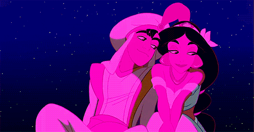
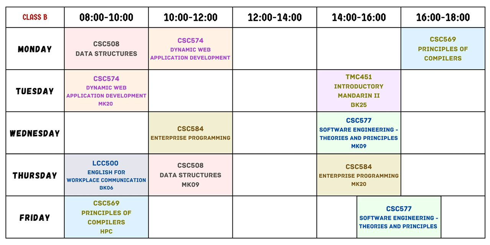

I Minta Maaf Biella... :(
💗
🕒 Jadual Kelas Syamim
💬 Tanya Cikit Bole?
📒 Short Ahhh Message
📖 Long Cringy Text hehe
💔 I'm Sorry Biella
💔 Please Forgive Me :(
💔 Please Baca uu :(

×

×
💌 A Note for You 💌